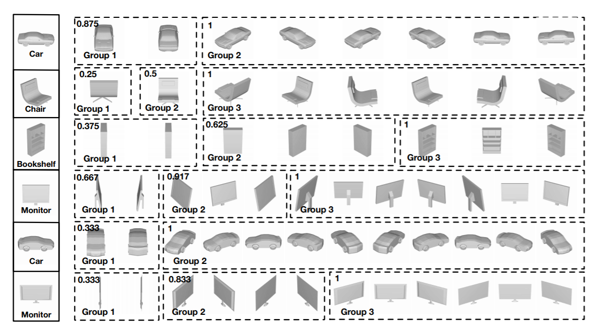
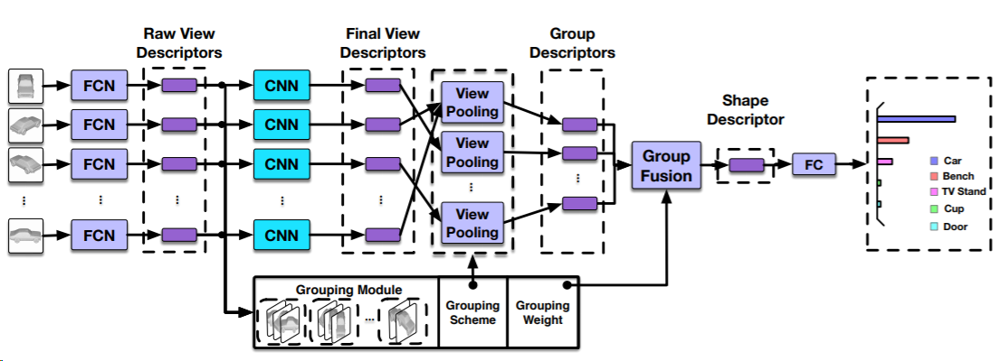
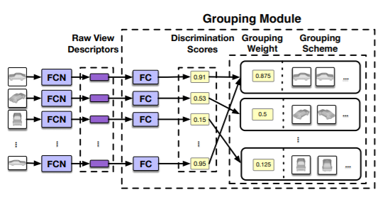

GVCNN: Group-View Convolutional Neural Networks for 3D Shape Recognition
Yifan Feng, Zizhao Zhang, Xibin Zhao, Rongrong Ji, Yue Gao
Abstract
3D shape recognition has attracted much attention recently. Its recent advances advocate the usage of deep features and achieve the state-of-the-art performance. However, existing deep features for 3D shape recognition are restricted to a view-to-shape setting, which learns the shape descriptor from the view-level feature directly. Despite the exciting progress on view-based 3D shape description, the intrinsic hierarchical correlation and discriminability among views have not been well exploited, which is important for 3D shape representation. To tackle this issue, in this paper, we propose a group-view convolutional neural network (GVCNN) framework for hierarchical correlation modeling towards discriminative 3D shape description. The proposed GVCNN framework is composed of a hierarchical view-group-shape archig'gtecture, i.e., from the view level, the group level and the shape level, which are organized using a grouping strategy. Concretely, we first use an expanded CNN to extract a view level descriptor. Then, a grouping module is introduced to estimate the content discrimination of each view, based on which all views can be splitted into different groups according to their discriminative level. A group level description can be further generated by pooling from view descriptors. Finally, all group level descriptors are combined into the shape level descriptor according to their discriminative weights. Experimental results and comparison with state-of-the-art methods show that our proposed GVCNN method can achieve a significant performance gain on both the 3D shape classification and retrieval tasks.

Fig 1. Visualization of group module. The left side is the input of group module. The right side contains the grouping decision and the score of each group.
Data

Fig 2. ModelNet dataset.
To evaluate the performance of the proposed GVCNN method, we have conducted 3D shape classification and retrieval experiments on the Princeton ModelNet dataset. ModelNet is composed of 127,915 3D CAD models from 622 object categories. We further subsample ModelNet40 as a the subset of ModelNet, which contains 40 popular object categories. We follow 3D shapenet to conduct the training/testing split.
You could download entire ModelNet dataset by clicking following button.
Group-view Convolutional Neural Network
Fig.2 illustrates the detailed flowchart of our proposed method. GVCNN employs the GoogLeNet as the base architecture. The “FCN” part is the top five convolutional layers of GoogLeNet. The “FC” part has appeared twice: One is the last layer of GVCNN to perform classifier, another is in Group Module to extract discrimination scores from mid-level representation (the output of “FC”). “CNN” is the same as GoogLeNet. The output of Group Module will fuse view descriptors to product the shape descriptor. Then the shape descriptor will be sent into one “FC” layer to get the final classification result. Given a 3D shape, we first take a set of views captured from different angles. Each view is passed through the first part of the network (FCN) to get the raw descriptor in the view level. Then, the second part of the network (CNN) and the group module, are used to extract the final view descriptors together with the discrimination scores, separately. The discrimination scores are used to group these views and a intra-group view-pooling step is conducted to extract a group level descriptor. Finally, all group descriptors are combined into a shape level description according to their grouping weights produced by the grouping module.

Fig 3. The Group-View CNN framework for 3D shape recognition.
As depicted in Fig 4, the grouping module use the same input views as the GVCNN. We use a FC layer to obtain the discrimination scores from raw view descriptors. Then, we group these views base on the discrimination scores to get the grouping scheme and grouping weights. The group scheme is used to supervise the intra-group view pooling. After the intra-group view pooling, the grouping weights are used for group combination to the shape descriptor.

Fig 4. Illustration of grouping scheme.
We proposed a GVCNN framework for 3D shape recognition. In this method, a hierarchical shape description framework is introduced, including the view, the group, and the shape level descriptor. The correlation among the views for each shape is taken into consideration, and the grouping information is utilized for shape representation. Compared with traditional methods, the proposed method not only considers the view level pooling, but also takes the group information in the pooling procedure. Experimental results and comparisons with the stateof-the-art methods have demonstrated the effectiveness of the proposed method. We have also investigated the influence of different numbers of views for 3D shape representation. The results indicate that more and relatively complete views can be better for 3D shape recognition.